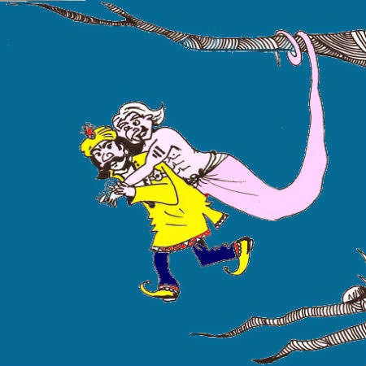

9.સૌથી નાજુક કોણ છે ? |
રાજા વિક્રમાદિત્યએ બેતાલને પોતાના ખભા પર લઈ જવાનો ઘણી વાર પ્રયાસ કર્યો હતો, પરંતુ દરેક વખતે બેતાલ વાર્તા કહેતો અને રાજા વિક્રમાદિત્ય તેના હાથમાંથી છટકી જતો. આ વખતે પણ બેટને એક નવી વાર્તા કહી. બેતાલ કહે છે...
|
|
એક સમયે અંગદેશના એક ગામમાં એક બ્રાહ્મણ તેની પત્ની અને ત્રણ પુત્રો સાથે રહેતો હતો. એકવાર એક બ્રાહ્મણે તેના ત્રણ પુત્રોને બોલાવીને કહ્યું કે અમારા તળાવ માટે કાચબાની જરૂર છે. કાલે તમે ત્રણે જણ દરિયામાં જાવ અને ત્યાંથી કાચબાને પકડો.
ત્રણેયએ હા પાડી અને બીજા દિવસે, તેમના માતાપિતાના આશીર્વાદ સાથે, તેઓ સમુદ્ર તરફ પ્રયાણ કર્યું. ત્યાં ત્રણેયે એક મોટો કાચબો જોયો, પણ તેમાંથી કોઈ તેને ઉપાડવા તૈયાર ન હતું. તેમાંથી મોટા ભાઈએ કહ્યું, "હું કાચબાને ઉપાડીશ નહીં, તેમાંથી ખૂબ જ દુર્ગંધ આવે છે." બીજા ભાઈએ કહ્યું, "હું પણ તેને ઉપાડીશ નહીં, તેમાંથી મને પણ દુર્ગંધ આવે છે." જ્યારે ત્રીજા ભાઈનો વારો આવ્યો, ત્યારે તેણે કહ્યું, “હું તેને ઉપાડી શકતો નથી, હું ખૂબ નરમ છું. ત્રણેય વચ્ચે લડાઈ શરૂ થઈ અને મામલો શાહી દરબારમાં પહોંચ્યો. રાજાએ કહ્યું, “મારા જીવનમાં આ પ્રકારનો કેસ પહેલીવાર આવ્યો છે, હું કાલે સવારે તેનો ન્યાય કરીશ. આજે તમે અમારા મહેમાન છો, માટે અહીં જ ખાઓ અને આરામ કરો.”
એમ કહીને રાજાએ ત્રણેયને ભોજન માટે બોલાવ્યા. બધા ખૂબ ઉત્સાહથી ભોજન ખાતા હતા, પરંતુ મોટા ભાઈએ ખાધું ન હતું. જ્યારે રાજાએ તેને પૂછ્યું, ત્યારે તેણે કહ્યું, "ચોખામાંથી સ્મશાનમાં સળગેલા મૃતદેહ જેવી ગંધ આવે છે. " જ્યારે રાજાએ આ અંગે પૂછપરછ કરી તો તેને જાણવા મળ્યું કે સ્મશાન નજીકના ખેતરમાંથી ચોખા લાવવામાં આવ્યા હતા. આ જોઈને રાજા ઘણો ખુશ થયો.
ભોજન કર્યા પછી, બધા સાંજે સંગીત સાંભળવા બેઠા. પછી બીજા ભાઈએ રાજાને વિનંતી કરી કે તે મૃદંગમ વગાડવા માંગે છે. રાજાની અનુમતિથી તે ગાયક પાસે જઈને બેઠો કે તરત જ તે ઊભો થઈને થોડા અંતરે બેસી ગયો. રાજાએ ઊભા રહેવાનું કારણ પૂછ્યું ત્યારે બીજા ભાઈએ કહ્યું, "ગાયકને બકરીના દૂધની ગંધ આવે છે અને મને તે ગમતું નથી." જ્યારે રાજાને આ વાતની જાણ થઈ ત્યારે તેને ખબર પડી કે ગાયિકાને બાળપણમાં બકરીનું દૂધ આપવામાં આવ્યું હતું. રાજા ફરી ખુશ થઈ ગયો. આ પછી બધા સૂઈ ગયા.
 બંને ભાઈઓ આરામથી સૂઈ ગયા, પણ સૌથી નાનો ભાઈ ઊંઘી શક્યો નહીં. રાજાએ તેના એક નોકરને આદેશ આપ્યો કે જઈને ત્રણેય સૂઈ રહ્યા છે કે નહીં તે તપાસો. જ્યારે નોકર ગયો, તેણે જોયું કે સૌથી નાના ભાઈ સિવાય, બાકીના બધા સૂઈ ગયા હતા. સેવકે રાજાને આ સમાચાર આપ્યા અને રાજા પોતે કારણ જાણવા જ્યાં ત્રણેય સૂતા હતા ત્યાં પહોંચી ગયા. રાજાને જોઈને ત્રણેય ઊભા થઈ ગયા. રાજાએ સૌથી નાના ભાઈને પૂછ્યું, "તને ઊંઘ કેમ નથી આવતી?" પછી તેણે કહ્યું, "કંઈક મને આ પલંગ પર ચપટી રહ્યું છે."
આ સાંભળીને નોકરે ત્રણેયના પલંગની શોધખોળ કરી તો કંઈ મળ્યું નહીં. પછી સૌથી નાના ભાઈએ બધી પથારી અલગ કરી લીધી અને ત્યાં એક વાળ હતો. તેણે પોતાનો કુર્તો ઉતાર્યો અને બધાએ જોયું કે તેની પીઠ પર તે વાળનું નિશાન હતું. આ જોઈને રાજાને આશ્ચર્ય અને આનંદ થયો.
બીજા દિવસે રાજાએ ત્રણેયને ન્યાય માટે બોલાવ્યા. તેણે સૌથી નાનાને ઇનામ આપ્યું અને બાકીના બેને સોનાના સિક્કા આપ્યા. રાજાએ કહ્યું, “તમારા ત્રણેયમાં જુદા જુદા ગુણો છે અને હું તમારા ત્રણેયથી ખૂબ જ ખુશ છું. હું મારા સૈનિકોને મોકલીશ અને કાચબાને તમારા ઘરે મોકલીશ.”
આટલું કહીને બેતાલે વિક્રમને પૂછ્યું, "મને કહો, ત્રણ ભાઈઓમાં સૌમ્ય કોણ હતું?" ત્યારે વિક્રમે કહ્યું, "સૌથી નાનો ભાઈ, કારણ કે બે મોટા ભાઈઓએ સૌમ્ય હોવાનો ઢોંગ કર્યો હશે, પણ રાજાએ પોતે પોતાની આંખે જોયું કે સૌથી નાનો ભાઈ કેટલો નમ્ર છે. "વિક્રમનો સાચો જવાબ સાંભળીને બેતાલે તેના વખાણ કર્યા અને તેની શરત મુજબ પાછો ગયો અને ઝાડ પર લટકી ગયો.
જે ગુણો આપણી પાસે નથી એવા ગુણોને આપણે ક્યારેય પ્રકાશિત ન કરવા જોઈએ.